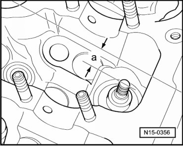
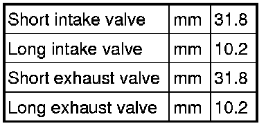
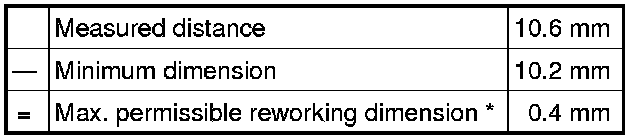
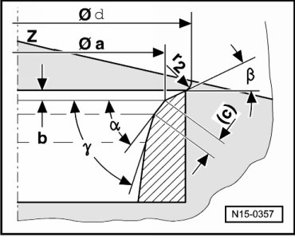

Valve Seat
Valve Seat Reworking Dimensions
Special tools, testers and auxiliary items required
• Depth gauge
• Valve seat refacing tool
Procedure
• When repairing engines with leaking valves, it is not sufficient to rework or replace valve seats and valves. It is also necessary to check the valve guides for wear. This is particularly important on high mileage engines --> [ Valve Guides, Checking ] Testing and Inspection.
• The valve seats should only be reworked just enough to produce a perfect seating pattern. The maximum permissible reworking dimension must be calculated before work is carried out. If the reworking dimension is exceeded, the function of the hydraulic lifters can no longer be guaranteed and therefore the cylinder head should be replaced.
- Remove camshafts --> [ Camshafts ] Camshafts.
Maximum Permitted Reworking Dimension is Calculated as Follows
- Insert valve and press firmly against seat.
• If the valve is to be replaced as part of a repair, use a new valve for the calculation.
- Measure distance - a - between end of valve stem and upper edge of cylinder head.

- Calculate max. permissible reworking dimension from measured distance - a - and minimum dimension.
Minimum Dimensions

Measured distance - a - minus minimum dimension = max. permissible refaced dimension.
Example

* The max. permissible reworking dimension is shown on illustrations for reworking valve seats as dimension - b -.
Intake Valve Seat, Dimensions

a = Dia. 32.8 mm
b = Max. permissible reworking dimension*
c = 0.9 to 1.5 mm
d = max. dia. 38.0 mm
r2 = Radius 2.0 mm
Z = Cylinder head lower edge
alpha 45° valve seat angle
β 30° upper correction angle
γ 60° lower correction angle
Exhaust Valve Seat, Dimensions
a = Dia. 29.8 mm
b = Max. permissible reworking dimension*
c = 1.2 to 1.7 mm
d = Max. dia. 35.0 mm
r2 = Radius 2.0 mm
Z = Cylinder head lower edge
alpha 45° valve seat angle
β 30° upper correction angle
γ 60° lower correction angle